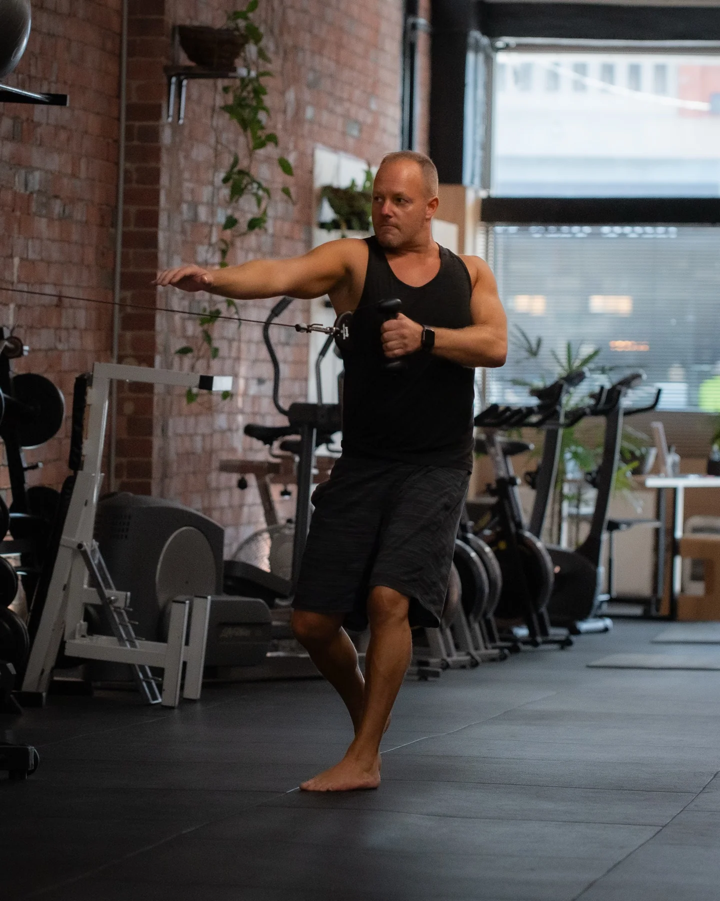
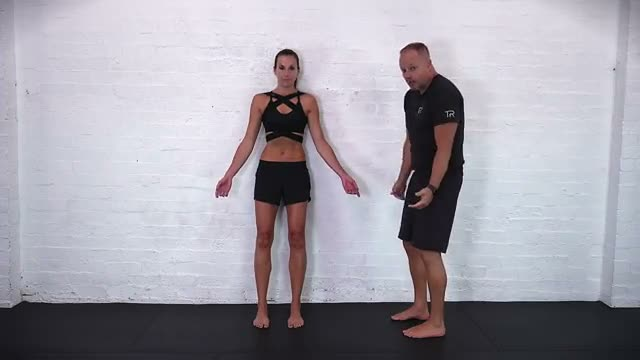
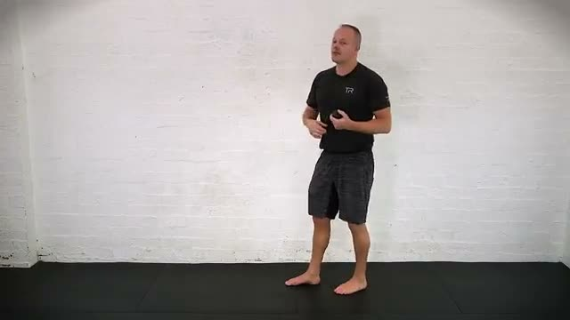

Build your foundations.
Understand your movement with individual coaching, then build from there.
Good training meets real life. Build a routine with Darren and Emma that leaves room for being human.

A plan that fits you.
In the studio.
Out in your world.
No one-size-fits-all challenge. Just a conversation about what you want from your body and your week.
Understand your movement with individual coaching, then build from there.
Make remedial massage and hands-on attention part of looking after yourself.
A clear plan and a direct check-in, so your trainer stays in the loop between visits.
What if your trainer could see how much time you actually have? Choose a demo time window to explore the idea.
12 minutes: a short home-practice window to discuss with your trainer. Your exercise selection still comes from them.
Try the companion ↗Concept only. Time selection does not prescribe or change your exercises.

Darren and Emma. Real conversations, familiar faces and attention to your individual movement. Technology keeps the plan close. Your people make it personal.
Your own trainer’s footage beats another random workout feed. These are excerpts from Darren’s public tutorials.



Tell us what you want more of in your everyday. That’s a much better place to begin.